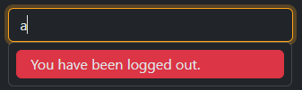
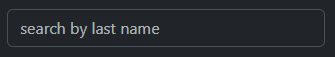

Use this JavaScript to suggest items to end users when they start typing. You can get suggestions from the server with ajax requests, and customize what to do when a user selects one of the suggestions.
Unlike how other suggests or typeahead works, this suggest doesn’t do any sorting or filtering. It only takes the list you provide it and presents it to the user. If you need to do filtering or sorting, do that in the search function that you are required to provide.
The list of options is presented under the text input using Bootstraps dropdown menu classes and also supports keyboard navigation. The text of the item selected will be placed in the input, and you can provide a function to do other things on selected.
Any error thrown during the search function will be caught and the message will be displayed to the end user as an error message below the text input. You can use this to (for example) detect if the user has been logged out and display an error letting the user know to log back in.

To position the menu and the spinner, position: absolute; is used. During the initialization process,
we check to see if the parent element has position: relative; and if not we wrap the input in a div
with the wrapperClass (defaulted to Bootstraps position-relative class).
Start by adding the style sheet to your page.
It is assumed that you will be targeting one text input at a time. All examples will target the following text element.
The most basic setup expects an array of strings returned from the search function. Almost all of our suggests rely on an ajax request where we do the filtering and sorting server side.
The above function does not do any error checking and there is a lot that can go wrong in an ajax
request. To handle some of these errors, we created a reusable object to provide common search functions.
You can import the search object from the Suggest module to get access to those functions.
As a convenience, you can define a placeholder for the input as an option.

More times than not, we return a list of objects instead of strings from the server. That
will give you a menu of [object Object] to select from. You need to tell the
suggest how to make a human-readable label using the label function.
string. It is used as the title for
each item in the menu as well as fill in the text input when you select an item from the menu.
If your search query is simple, you may want to highlight the part of the label that put it in the results. You can do that using the mark function.
Like the search function, there are some pre-made mark functions you can use. Import the mark
object from Suggest.js and use one like below. (The example above is a copy of startsWith).
Since the mark function returns a string that will be rendered as HTML, you can also take this opportunity to add custom HTML content to each item in the menu.
By default, the suggest only takes what the label function returns and puts it in the text input. You can do more by implementing a select function. You may want to also implement the clear function to undo what the select function has done.
I originally tried to stick with Bootstrap's dropdown classes to handle the styling for the suggest, but with keyboard shortcuts, spinner placement, and validation coloring it got too complicated. It was actually easier to copy those classes as a starter and move on from there. I tried as much as possible to tie into Bootstrap's CSS variables so theme colors will work as expected.
With that said, sometimes things need to be customized. The template object has three properties
you can use to customize how the menu, item, and error elements look.
| Name | Type | Default | Description |
|---|---|---|---|
placeholder |
string | '' |
A convenience option to fill in the placeholder attribute on the text input. |
template.menuEl |
string | '<div class="suggest-menu"></div>' |
The HTML templates used when creating the menu element of the suggest. |
template.itemEl |
string | '<button type="button" class="suggest-item"></div>' |
The HTML templates used when creating the item element of the suggest. |
template.errorEl |
string | '<div class="suggest-error"></div>' |
The HTML templates used when creating the error element of the suggest. |
minLength |
number | 1 |
The number of characters before executing the search function. |
debounce |
number | 250 |
The number of milliseconds after the input event fired to wait before refreshing the list. A new input event will cancel the last event. A good explanation can be found here: Stack Overflow: How long should you debounce text input. |
spinner |
string | 'oval' |
A name from the Spinner.js module to use as a thinking indicator on the right side of the text input. Can be one of the following
values: audio, rings, grid, hearts, oval, threeDots,
spinningCircles, puff, circles, tailSpin, bars, or ballTriangle.
You can preview them here.
|
searchFn (required) |
(query: string) => ArrayLike<T> | undefined |
The only required option. A function that takes the query string and needs to return a collection after filtering and sorting. Usually sends the request to the server to process, but you could do it client side in this method if you want. |
labelFn |
(item: T) => string | item => item |
A function that takes one item from the collection acquired from the search function and needs to return a string. This string is used as a title for the item element, is passed to the mark function and is set as the value of the text box if selected. |
markFn |
(query: string, label: string, item: T) => string | (query, label) => label |
A function that takes the query string, the label from the label function and the item used to make that label and return a string that can be rendered as HTML. You can use this to ‘mark’ or highlight the label. This string is inserted into the item element template and rendered so you could also customize each item in the list provided to the end user. Since this function will render HTML, it can be vulnerable to XSS attacks.
|
selectFn |
(item: T, itemEl: HTMLElement) => void | () => {} |
A function that takes the selected item and its element and does not need to return anything. It is for you to do work when an item is selected from the dropdown list. |
clearFn |
() => void | () => {} |
A function that takes no arguments and does not need to return anything. It is called when the input box is cleared and usually used to clean up anything done during the select function. |
enterFn |
(item: T, itemEl: HTMLElement) => void | undefined |
A function that takes the selected item and its element and does not need to return anything. This allows you to customize what happens when you hit enter when an item has focus. |
| Method | Description |
|---|---|
destroy |
Removes all elements and event listeners created during initialization from the DOM. |
show |
Reveals the menu of items that are suggested. |
hide |
Hides the menu of items that are suggested. |
clear |
Clears the text input, hides the menu, and execute the clear function if one is provided. |
refresh |
Refreshes the menu based on what is currently in the text input. |